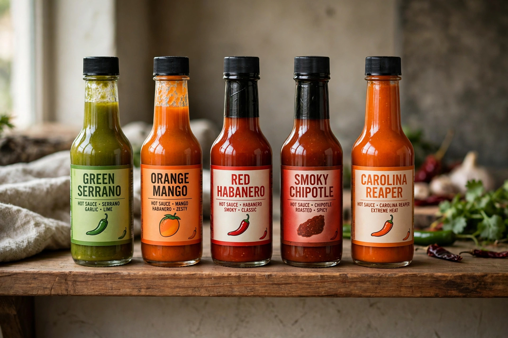

Hot sauce
From Wikipedia, the free encyclopedia

Hot sauce is the generic name for sauces made from chilli peppers, typically with vinegar and salt, spanning Louisiana-style aged red sauces (Tabasco, Crystal), Mexican bottled classics (Cholula, Valentina), the rooster-labelled Sriracha of California, Caribbean Scotch-bonnet sauces, and a modern craft industry competing in both flavour and ferocity. Chilli sauces are ancient in the Americas — Aztec markets sold them — but the bottled article is a 19th-century creation, bottled first in the United States around the 1840s–60s and industrialised by the Louisiana makers.
Heat, measured
Heat is rated in Scoville units, from Wilbur Scoville's 1912 test in which diluted extracts were tasted until the burn vanished — now replaced by HPLC measurement of capsaicinoids. Tabasco sits around 2,500–5,000; a habanero reaches a few hundred thousand; the record arms race bred the Carolina Reaper (recognised in 2013 at over 1.6 million on average) and then Pepper X (2023, higher still) by breeder Ed Currie. Superhot sauces often cheat with capsaicin extract, a practice purists scorn. The television show Hot Ones (2015–) turned the escalating-sauce gauntlet into a celebrity-interview institution, carrying hot sauce fully into pop culture.
Styles and uses
Louisiana sauces are thin, bright and vinegar-forward, made for oysters, eggs and beans; Buffalo wing sauce is Frank's RedHot (1920) whisked with butter, fixed in legend at Buffalo's Anchor Bar in 1964. Mexican sauces lean on dried or fresh chillies with lime-bright acidity; sambal and chilli crisps (China's Lao Gan Ma above all) occupy the adjacent condiment shelf. Under all the branding, the formula is a folk constant: chilli, acid, salt, time.